大家好，我是小耳朵。最近一年多，做了不少项目，绕了一大圈，因为 AI 的出现，又回到互联网开始了AI web出海，最终也拿到了不错的正反馈。
说起来，距离上一篇在生财的深度分享竟不知不觉过了半年有余，实在惭愧，其实期间几度提笔又止，终于理解了亦仁所说的不要写长篇，无形中筑高了门槛。
先说收获：
下面是最高时一个月的营收数据（不是净利，未扣除成本，营收波动也不小），过年期间竟然还涨了不少，也是第一次经历春节期间每天口袋进钱的感受，真是感慨良多，想想去年这个时候，我还是在摸索中，AI 时代，变数真的很大。
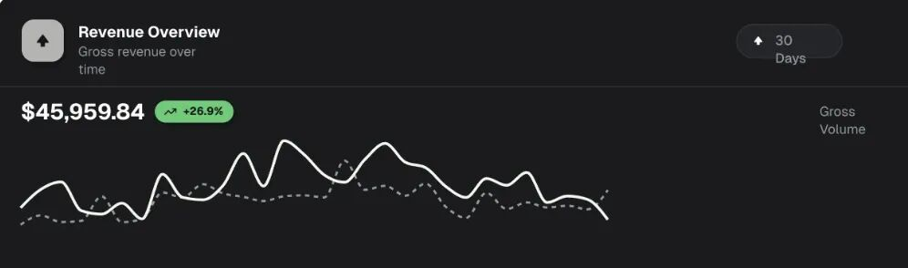
当然，收入也只是一方面，一年多的摸爬滚打，让我对市场的感知、对商业的理解、自我认知等，比过去 10 年加起来的还要多得多。
先在此郑重感谢很多老师，亦仁教我眼界、刘小排教我产品、哥飞教我SEO、良辰美让我看到希望，还是那句话，所谓良师益友，人生能有几回有，无比感恩。
为什么写这篇分享：
我想写给刚进生财仍在探索领域的新手。这也是我一直输出的核心原因，我想给那些处于迷茫的人“打个样”，至少对于 1 年前的我，很需要这样的内容，就像我的公众号简介写的那样，“深知小白摆脱惯性进入正循环的不易”。
我想写给出海 web新人，给同样在做出海web 的圈友带来一些信心和正能量。
另外，过去一年经历不少，就当给自己做个年度总结吧。
新人第一问：我到底该做什么项目
我知道这个问题是每个新人的第一个困扰。在直接回答之前，不妨先看看我的过程吧。
我在生财学习了大量别人案例分享、摸索、实践，前前后后做过不少项目：
视频号
也顺带做了抖音、快手，当时为了最快验证一些路径，做了好几个账号，最高也有 12w+粉丝，抖音因为 有1000 粉的门槛要求才能带货，硬是靠不买粉慢慢做到了 1000 粉（只有做过的才知道这个阶段的抖音涨粉有多难，后来不做了，切回了个人号，就慢慢跌到 1000 以下了）。这些都让我对视频号、抖音、快手的玩法、生态有了足够了解，以及锻炼了我的自自媒体基本功。
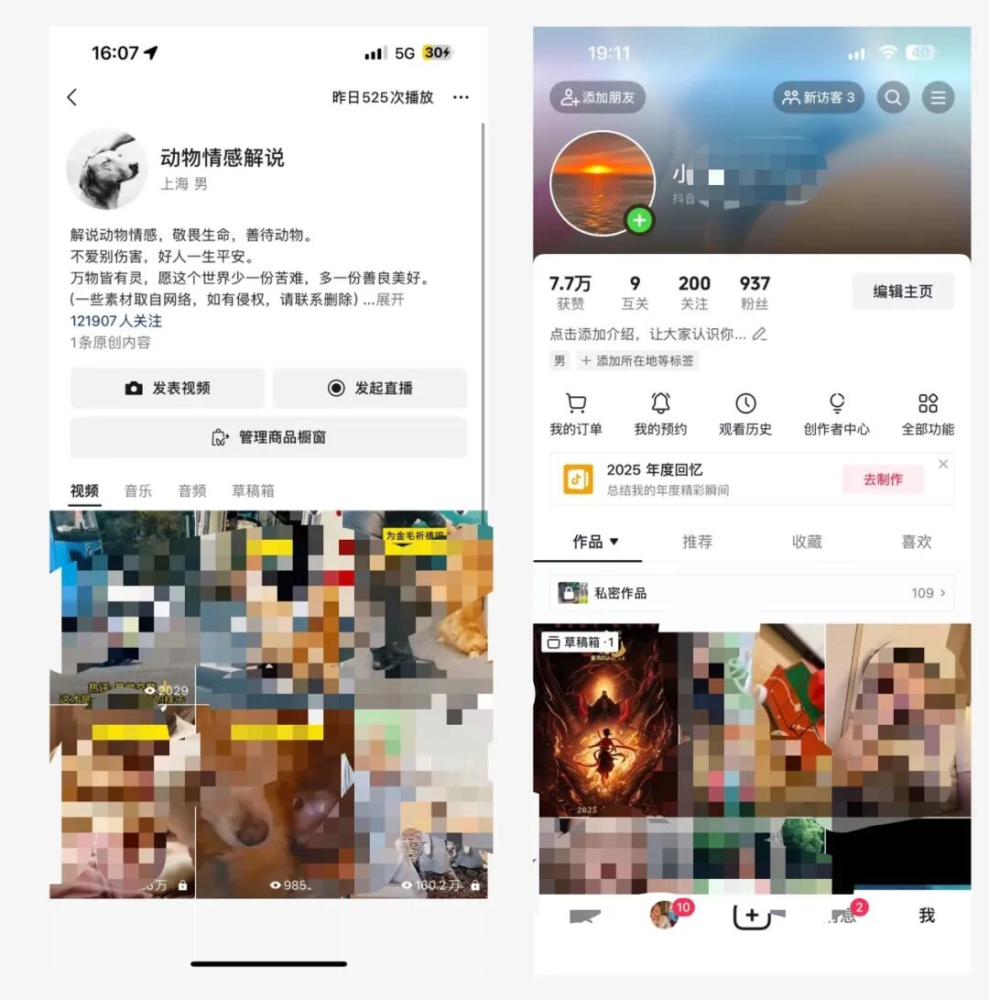
直播带货
想法很简单，看到太多人靠这个赚快钱。当时，因为听说凌晨竞争小，我都是 0点开始直播，然后一播就到四五点，很难想象，曾经很排斥直播氛围的我，也很快学会了“1、2、3 上链接那一套说辞”，并且做的也还行。
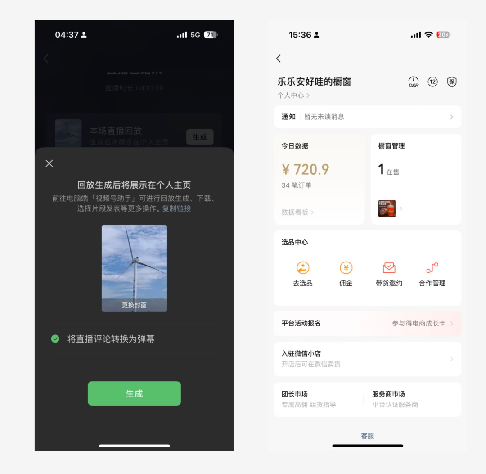
小红书
算下来，我做了有 4 个不同赛道的 1000 粉丝+的账号，手头只有 1 个还留着。因为，主要就是接了一些广告商单。
上面 3 个项目其实很明显，就是感觉大家什么在赚钱，我就做什么，背后是我那颗迷茫、焦虑的心，是的，这些项目也不是不好，只是我始终找不到感觉，而且始终有个问题无法回避，这些门槛不高的赛道，我的优势在哪？我是从 0 跟别人开始竞争吗？比如，我就亲眼看过六七十岁老奶奶在做视频号直播，真的不愧是视频号，所以，我一直没停止去看更多项目。
App 开发
这里，还是得感谢生财，让我一直有机会接触到不同项目。我报了 App 开发航海，当时只觉得App 开发是个日后肯定能发挥作用的技能，加上 AI coding 已经逐渐成熟，于是0 经验的我花了 20 多天，做了屏记 App，于是就有了后来上榜单的事情了。一个定价 1 元钱的 App，卖了 1000+元，appstore 搜索，名字还被人山寨了😂。我在上一篇精华帖的末尾有详细描述
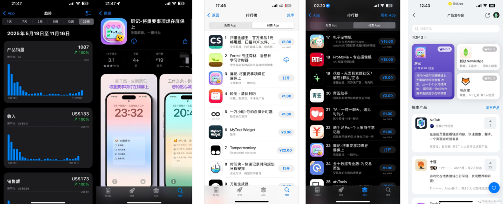
出海 web
第四个项目虽然没赚到啥钱，但给了我足够的反馈。它似乎很好地回答了一直萦绕在我心头的一个问题，是啊，我可以选择老路做产品啊，因为 AI 的出现，互联网又开始焕发生机。
但又出现了一个新的选择，选择 App 开发还是出海 web，直到刘小排老师、亦仁都给出了相关的解答：
- 我记得良辰美老师请教过亦仁有关选择 做App还是 Web 的问题，亦仁大概的意思是，两者的天花板都很高，但 App 依赖投流，没有足够资金很难做大，出海 Web 不一样，小排老师就是典型的产品自驱动。
- 而小排老师的一些解答，更是让我坚定了要做出海 AI Web，下面就是核心点，我记在了桌面上，在前期就是靠他们熬过来的：
- 出海 Web 还处于红利窗口期：因为很多国内公司，哪怕是互联网企业都还未涉及，都还停留在 App 的领域，我从我的互联网圈子也可以略窥一二；
- 快速失败，快速验证需求，试错成本低，Web 的好处相比 App 在于迭代迅速，开发门槛和成本要比 App 低很多，而出海又意味着不需要折腾一些国内的审核。另外，快速失败也很重要，因为做 web本质上就是博概率，其实做项目、创业何尝不是呢，而现如今，有几个项目能像出海 Web 这样，低成本，高天花板，对普通人来讲，几乎没有；
- 躺赚，长期生意，边际成本低：因为订阅制的存在，以及 Google 的搜索机制等，Web又可称作是 365 天 ×24 小时在线的 “自动售货机”，顾客是全球任何一个角落，在时间和空间上都不受限制，所以毫不夸张地说Web 是正儿八经的躺赚（睡后收入）。长期生意就更不必说了，十几年前的网站现如今依然在持续不断地在赚钱，这种案例数不胜数，边际成本这点稍微解释下，随着用户规模的扩大，收入也会水涨船高，但成本相比之下增幅很小。
那还等什么，开干啊！我毫不犹豫地开始报出海 web 航海，又加入了出海 AI web 的深海圈，最终有幸成为小排老师的第一期学员，对了，小排老师的课程其实出来之前就呼声很高，我的期望值也很高，但即便在这种前提下，当看到课程时，我还是被课程的专业性、系统性所震撼到。
一切如期而至
从跟小排老师All in 学习出海web ，到最终出单，我花了差不多 4 个月的时间，可能是我比较较真，有点钻牛角，学习的过程无疑是痛苦的，坑无疑是踩了不少的，后面我会详细复盘，但在此之前，我们不妨先感受下出海 web 这门软件生意的魅力吧。
我第一次体验了，什么叫睡后收入
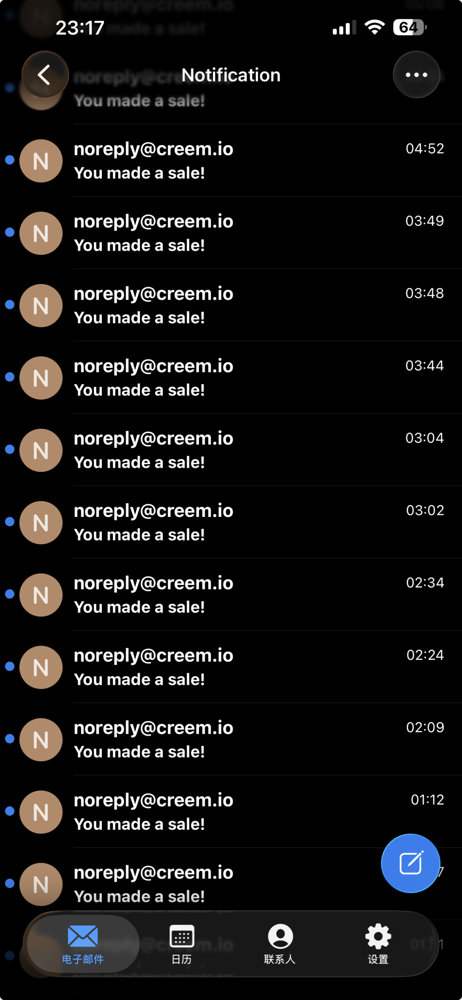
我第一次见识了，动不动就付费几百刀的神仙用户。
第一次体验了，什么叫做真正的躺赚，只要网站上正轨，你做的不是短期时效需求，那么，它就会带来持续性收益，并且边际成本还不断降低。
第一次体验了，边娱乐（看电影、打游戏、钓鱼）边运动手机不断推送订单的神奇美妙体验。
第一次体验了赚的是美刀，花的是人民币的爽感，是的众安绑定支付宝微信，可以直接支付国内消费，无手续费，还给你返利。
第一次体验了，SEO 的正反馈。
当然，我也体验了 Google ads 动不动就跑几千上万的投放费。也体验了，买外链的费用也可以一条高达几千上万。也经历了网站宕机后，从一开始的无头苍蝇的状态到现在的稳如老狗。
对了，看到这，你是否还记得前面的问题——“我到底该做什么应该”，我想聪明的你差不多有了自己的答案。
我的回答是，没有任何捷径可以走，哪怕你再通过如何缜密的分析、推理，都无济于事，因为你的脑袋里的信息、认知有限，无法支撑你做出真正的决策。唯一的答案就是，停止空想，开始行动，不停地去折腾、试错、总结，懒得动？遵循最小阻力、最快反馈原则。对，抱歉，这个答案没有新鲜感，却是我花了 1 年多得出的结论。
出海 AI web 深度复盘
好，如果你对出海 web 也有兴趣，那么我们开始深入，从这段开始，我会系统复盘下我在出海 web 这条路上所经历过的，包括新人常见疑问，我的产品、搞流量心得体会经验技巧，遇到的一些坑，后续计划等和盘托出，大家可以直接根据自己情况，按照序号跳读即可。
不知道做啥需求
作为新手，时常感受是，别人风风火火上网站，自己却迟迟不知道做什么，不用自责，你不是一个人，这是新人最常见的情况，而这种状况是可以改变的，下面是一些常见手段：
刷榜单
要十分熟悉一些知名平台的榜单产品，小排老师曾在一次直播中提到，对于 toolify 上的月度榜单产品，他熟悉到任何一个产品都是干什么的。震撼之余，打那次过后，圈子里就开始流行看榜单了，良辰美老师更是直接用公众号的方式一个个扒榜单上的产品，执行力拉满。
如何刷：
平台：toolify、TAAFT、Traffic.cv等。
如果是新手，我建议按照下面的维度进行分析榜单产品，很多人用 AI 辅助，但最好的效果还是亲力亲为：
💡 这个产品解决的是什么问题？
👤 用户是谁？
🤔 用户为什么需要它？
🗣️ 用户是如何评价它的？
🔍 它是如何找到用户的？
💰 它赚钱吗？多少？
🧠 我从这个产品身上学到了什么？
🤔 它的什么做法不容易？
🤗 一句话推销：
💡 不同的方法：
🎉 我能做出来吗？
🧭 如何找到用户？
🤔 为什么是我？
❤️ 我能坚持吗？
当然，老手的话，可以针对性挑选和自己目标赛道一致的产品类型进行刷。
日常记录需求
养成日常随时记录需求的习惯，这是来自Pieter Levels的方法，他可是推特上鼎鼎大名的独立开发者，他还写过一本叫做《Make》的书籍，也在圈内广为流传。
具体做法：
每天逼自己记录需求，比如至少 3 个以上，还是想不出需求？本质上还是没有养成思维习惯。
其实，只要做个有心人，你真的有做不完的需求，比如多多留意来自于你日常的一些抱怨、痛点，无论是生活上的烦恼，还是工作上的一些不方便的地方，甚至是在你娱乐刷视频、打游戏的时候。
就拿刷视频举例子吧：
我会故意给一些AI视频点赞收藏，让大数据多推推，尤其是ins 上的 AI爆款视频，经常会透露背后的用的哪家API，我能否组合不同API搭建一款产品流水化此类爆款。对了，你应该见过那种极其吸睛的开头吧——一个翻车镜头瞬间无缝过渡到人物后空翻的视频。于是就有人专门做了这类万能开头视频素材网站，对，这个人是我。
我说刷视频还只是日常中的一种缩影，我不经意会思考视频中传达的点能否被产品化。其实，生活里还有无数类似的场景，只要你愿意多观察、多留心，就会发现，久而久之，你有做不完的需求，做互联网产品是这样，做任何其他生意也是这样。
关键在于——刻意思考，保持开放。
对了，我靠这个方法，目前需求表单上已经有 100 多个需求了，根本做不完。这里我有个自制的模板，大家可参考：https://my.feishu.cn/wiki/HYZ3wMfM0iZ29dkDOjcc2xNBnhR?table=tblfyo7CntSufQMP&view=vew5wSiQtW
新词
上面 2 个方法，其核心本质都是为了培养我们的产品敏锐度。那有没有一些更快的方法呢？
答案是有的，新词就是一种，这里的新词一般指的就是新的 AI模型名称，或者围绕着新出的模型的周边 AI 工具服务。
这是新人的一次弯道超车的机会，因为新词抓的早往往能快速获得正反馈，而正反馈对新人太太太重要了。但正因如此，新词也存在激烈的竞争，所以需要速度快。那问题又来了，如何速度快呢？
多关注头部 AI 自媒体账号，日常刷推特，刻意喂算法相关内容。
除了人肉刷，还可以辅助一些 AI 工具，让 AI 持续监测相关领域新闻消息， 这个方式方法相信生财一搜一大堆。
最后，速度还体现在上站速度这一环节，准备一套专业的Starter Kit，行业里面最出名的就是ShipAny、MKSaas，然后持续打磨成最适合自己的，每次上站形成一套高效 SOP，甚至因为 Openclaw 的出现，实现直接从捕捉产品机会、搭建产品、上站全流程自动化。
但最终，我还想补充一点，对于新手，新词虽然可能快速获得反馈，尝到甜头，但并不是说我们一直只做新词，老手会敢于挑战老词（已存在于市场很久的老关键词机会），以及擅长于上面第二种方法
需求真伪
我们先来看个案例：
小明发现现在的模型，能很好地进行拍照识别，于是想到一个产品 idea，做一个 app，拍摄食材就能瞬间给出相关食材组合搭配不同菜谱，这样他每次市场买菜时就可以拿出 app ，拍个食材就可以推荐食谱从而知道买哪些菜了，于是小明兴奋不已，倒腾了一个月终于做出来了，投入市场发了小红书却几乎无人问津。
其实小明就是我，前半部分是真的，后半部分是虚构的，我最终还是没开发，我不能说这个 100% 就是没市场，但我个人分析判断大概率就是个伪需求。理由是，人群定位不清晰，现在买菜的年轻人本来就不多，最后筛选出来的所谓“目标用户”是愿意去线下菜市场买菜然而又不懂如何做菜，这本身就是矛盾的，而且买菜组合其实常年就那几样，组合过几次后面基本就熟悉了，产品留存又是个问题，再加上这个需求本身又没有强到足以支撑付费，最终我打消了念头。
举这个例子，就是让大家感受下真伪需求，其实很多时候并不是那么清晰明了，别说普通人了，专业产品经理甚至公司老板都经常会有误判，失败案例更是比比皆是，比如圈内著名案例，抖音的前身 musical.ly，当时有个很有分量的股东找马化腾投资，还找了 2 次，都不了了之，再比如扎克伯格前几年大搞特搞虚拟元宇宙的事，老罗之前搞 AR 等等。
那么，有没有什么好的办法尽可能避免伪需求呢？
答案是有的，这里又不得不献上来自于@刘小排老师的新手必读经典——《如何获得产品 idea》，可谓是流传甚广，这里直接贴出新手抄作业式答案，新手遵从这 4 点足矣，听话照做，就可快速拿到结果。:
第一就是能满足你自己的需求（可以自行搜索 eat your own dog food）。
留意市场成熟产品，这个跟直接抄不一样，我们要问自己一个问题，既然有了，我要做出哪点不一样的出来，你是性价比更高，还是用户体验更好等等。
同样排学万能公式：什么人，在什么场景下，愿意花多少钱，解决什么问题？这句话我直接打印贴在墙上了哈哈，群友甚至还有专属表情包。
还有个心法：如果你所要做的这个产品，我们假设一下它来自于一个你不大喜欢的人，甚至你有点厌恶的人，那么这个产品你还会付费吗？如果答案是肯定的，那么多半它是一个真需求。
最后我也还想再补充一点：
其实很多时候，如果我们无法确定需求的真伪也没关系。因为目前产品 MVP 的开发门槛已经降低到了人类历史最低水平，我们甚至只需要花不到一小时、甚至更短的时间，就可以快速上架一个 MVP，从而快速验证想法。
所以，我们大胆一点吧！如果你真的很想做，觉得很有兴趣，不妨先快速行动起来，用概率博成功率，这里就不得不再次提及良辰美老师了，一年至少一百多个网站，靠的就是大力出奇迹。
产品设计基本原则
简单易用原则
在国内，我们日常使用的大厂 App 大多臃肿而复杂，似乎我们都忘记了一个好的产品该是什么样子了。我理想中的好产品，应该是足够简单易用，注意，它可以功能不单一，但是对新用户足够友好，用完感受是愉悦甚至是惊喜的。
比如，像https://tinypng.com/（大名鼎鼎的熊猫压缩）、https://www.remove.bg/、Anybox，最近给我感受最深的案例就是Typeless，用完有种不好意思不付费的感受。
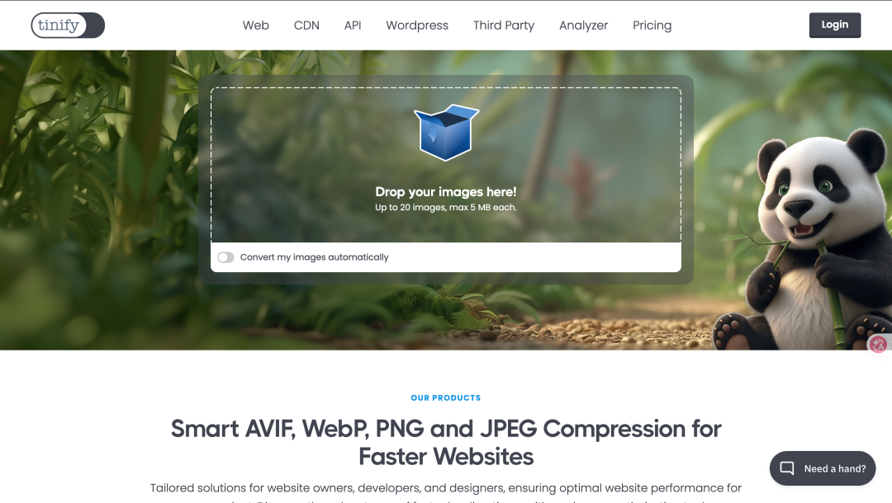
用小排的话讲，把简单留给用户，把复杂留给自己，简单到爸妈一眼就能看明白。所以下次设计产品时，不妨多问问自己这些问题吧。
MVP原则
相信但凡接触过互联网的人，对 MVP 原则都不陌生。而 Web相比 app 的优势就是轻量、快，加上 AI coding 降低门槛，提高上站效率，MVP 进原则在这里就更加凸显价值。
所谓 MVP，这里我就不放那个经典的造车图（从脚踏车逐渐迭代到两轮车、三轮车、汽车）了，但实际情况下还是会遇到一个问题，那就是你如何定义清楚 MVP 产品边界，这听起来很简单，实践下来，会发现，很多人要么定义不清楚，把一些锦上添花的功能放进去了，亦或者开始定义的好好的，做着做着就跑偏了。我甚至差点都想开发出一款产品帮用户定义清楚 MVP，跟踪监督直到上线，什么？你觉得游戏？那不如先干起来吧，发布时喊我，我做第一个用户哈哈。
话说回来，上面问题的核心，还是没彻底搞清楚自己为什么做这个产品，这似乎又回到了上面所讲的，新人如何找需求？这两个其实是深度关联的。
我说下我的实践结论：我们不妨 将MVP 功能进行列举，然后按照上面所说的一些需求真伪维度标准，一个个划掉，直到最后出现的那个，拿来和你做这个产品的初衷对比，同时，如果你能找到你的目标用户那就再好不过了，你可以拿着基本的产品原型直接和用户交流，这往往非常有效，可以让你摆脱自己的单一视角。
我想强调的一点是，MVP可以粗糙，但核心功能不能将就，怎么判断功能是否做到位了，如果目标用户用完核心功能，有种"诶哟不错"（AHA Moment）的惊喜感，那多半成了。
一句话原则
一句话原则，即你的产品能不能用一句话说清楚它只做一件事。
或者用现在流行的说法，就是别一上来就想着做 all in one。这理解起来简单，实践时很容易当局者迷，被各种因素带偏，是的，说的就是我。
大而全，往往是“结果”，不是“起点”：你不妨去留意下，市面上90%大而全的产品，其实都是一步步迭代出来的。都是从某一个切中真需求的点，做出来了足够优雅好用的产品，这样用户留住了，再根据用户反馈，一步步搭积木丰富产品功能。
我印象最深的就是阿彪说pollo ai也不是一开始就all in one的，因为发现用户文生图完了后还要用图去其他家生视频，于是团队顺势做了“图生视频”。这是用户真实需求自然催生的，而不是拍脑袋式的“全能套装”。
反面案例有很多，比如有一款产品叫Google Wava，你没听过是因为Google 也犯了同样的错误，具体可以问 AI。
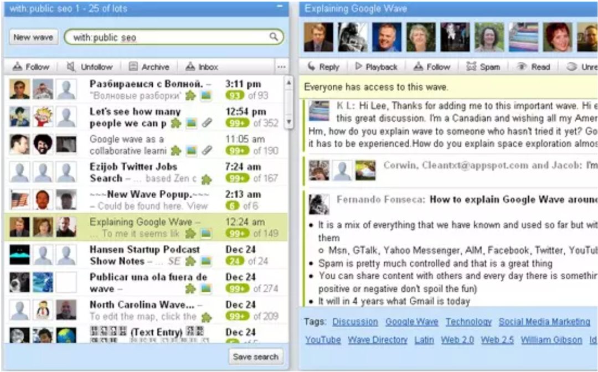
从单点切入，足够锋芒，击穿用户心智：
能看到这的小伙伴很厉害啊，一看就是做啥事都容易成功的那种，对，说的就是你。
那我们就讲一个“鬼”故事放松下吧，鬼灭之刃里有个超人气人物善逸，他不像哥哥会雷之呼吸很多招，他只会一招，霹雳一闪，一开始他很自卑，动不动哭鼻子。但通过后面的魔鬼式训练，最终将这一招磨练得登峰造极，其完成度、威力和速度完全远超于其他雷之呼吸使用者，最终击败变成鬼的哥哥。
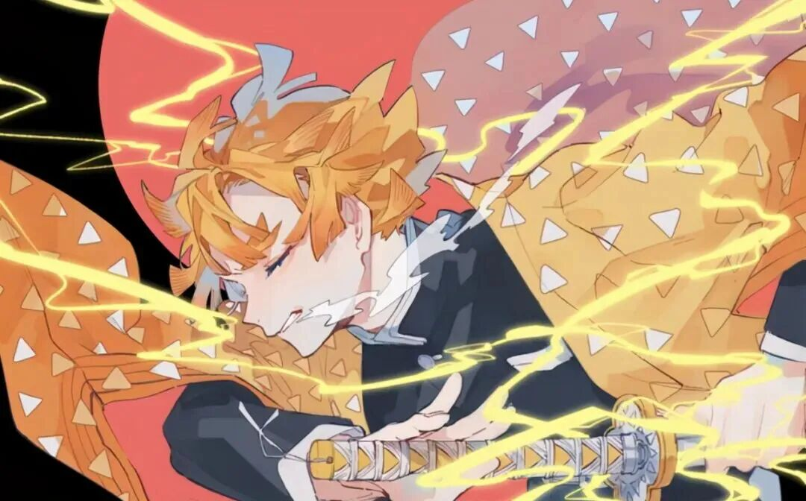
伟大是被迭代出来的
对了，这个陷阱不仅新手容易犯，据我多年牛马经验，很多公司尤其是有了点闲钱的老板，动不动一开始就喊口号我们要做这个也要做那个，我们要做整个xx生态。
有一句话叫伟大不是被计划出来的，我们不要忘记了呼之欲出的下一句话，伟大是被迭代出来的。
新人如何搞流量：
问题越具体，解法越清晰
我相信，搞流量无疑是大家关注的焦点。但别急，我们必须清楚为什么搞流量，你可能会说这不废话吗，得先要有人用啊，那我再问你，要有多少人用呢？新人可能就此卡壳。
新人面对的首个挑战不是无脑搞流量，是破首单，这是第一个里程碑。对了，出单时的喜悦非常刻苦铭心，有人说笑道，后面虽然赚的多了再也没有破首单时的那种狂喜，哈哈，你还别说。
那么怎么破首单，我们不得不再继续深入具体点，一般来讲，新站付费率在 0.5%——1%，那么就相当于我们至少要获得 200 个用户，我们不妨再保守点，就按照 300 个用户来说吧。所以，破首单问题就变成了，从哪先搞到这 300 个目标用户？相比开始的问题，是不是清晰多了。
其实带着上面的问题，给 AI 提供足够全面的背景信息和目标，以目前 AI 的先进性，起码会有很多事情可以做了。而不是像很多新人那样，产品发布了，就大概意思意思推广两下子就等着用户过来了（起码我一开始就是这样的），所以，发布产品仅仅只是个开端。下面是我的实操路子：
免费方式方法
全面搜集目标用户群
如果你的需求是认真按照前面所说的方法筛选出来的（不是拍脑子的伪需求），这时候问题已经解决了一半，因为你懂需求的痛点，你很清楚是哪类人群会面临这类问题，在这么具体化信息的前提下，你不大可能找不到用户群，你要做的事情就是全面搜集散落在各个平台的用户群。相反，如果你的答案还不够清晰，那是不是产品需求本身就存在问题？
找到目标用户群，接下来就好办了，该发软文的发软文，发优惠活动的发活动。
发布到一些独立网站
除了上述的目标用户群所在平台，我们还可以同时去发布到一些开发者、产品经理、技术社区平台，尤其是你的产品涉及到一些产品上的创新，还是很容易引起一小波流量的，甚至还很可观。这类平台一般有：v2ex、indieHackers（以前可是要付费提交产品的，现在免费）、小众软件、Product Hunt 、Hacker News、BetaList等。
说下我一个网站的冷启动经历：
我前期大部分流量来自于 Reddit和一个红人 YouTube 渠道，Reddit 5 个号，基本都是1000 左右的Karma，搞废了 3 个号（至于老号，哪怕被封了，只要不是写永久封禁，实践证明，过了几个月还会恢复，而永久封禁是在你被解封后再次营销时才可能触发）。
最终的效果是，在几个最相关的 Reddit社区里，我的网站竟然被用户自发传播，是的，Reddit 垂直社区的信息传递效率很快（但 Reddit 投流效果却一般）。
Reddit这个众所周知的“金矿”，欧美用户占比高，引流效果也很好，我甚至每天能到我网站能有多少，几点小总结：
reddit社区氛围比我想象中浓厚，一旦帖子有用户负面回复，主动删除，比群主主动删要好很多
逐步试探：比如不要一来就发链接帖，一般试探优先顺序：主动评论爆款帖、发求助帖不带链接、发求助帖不带链接（小号互动发链接）、发带链接帖（最好先主动询问群主征询同意），前提是对社区有利的
多看爆款帖子，感受爆点背后传达的用户情绪，总结规律，但只看不够，快速粗糙实践出去
再说一些发链接小技巧：先不要用超链接形式，用纯文本试探，如果帖子爆了发出去的链接可以二次修改为超链接形式，最后主页也可以放链接哦
善用置顶结合二次修改回复功能，比如置顶一个留言后，先回复，下次还可以修改回复带上链接，不要直接带，可以用小号互动或者间接的方式引出链接。
最终，如果你嫌弃麻烦，你可以直接去海外版咸鱼fiverr 上下单让别人帮你传播产品，起码增加了一些确定性。
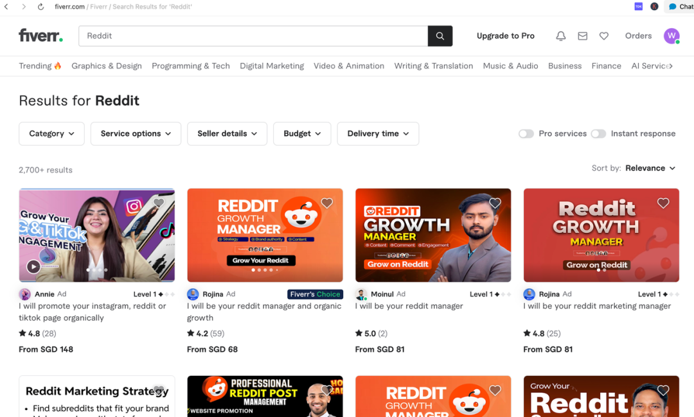
YouTube
在我眼里价值和 Reddit 不分上下，实践证明，一个腰部的AI 博主能带来持续几个月的订单。因为 YouTube 在海外相当于视频版的 Google，任何用户不懂的问题，比如修水管就直接去 YouTube 上搜索，有点类似国内的小红书。我的网站YouTube 在两方面给我带来了价值：
启动流量：我通过发布shorts，在热门视频评论区引流的方式，获得了不错的一些前期流量。类似的还有 Fandom 粉丝社区、Hacker News 讨论帖，都可以用类似方式引流。
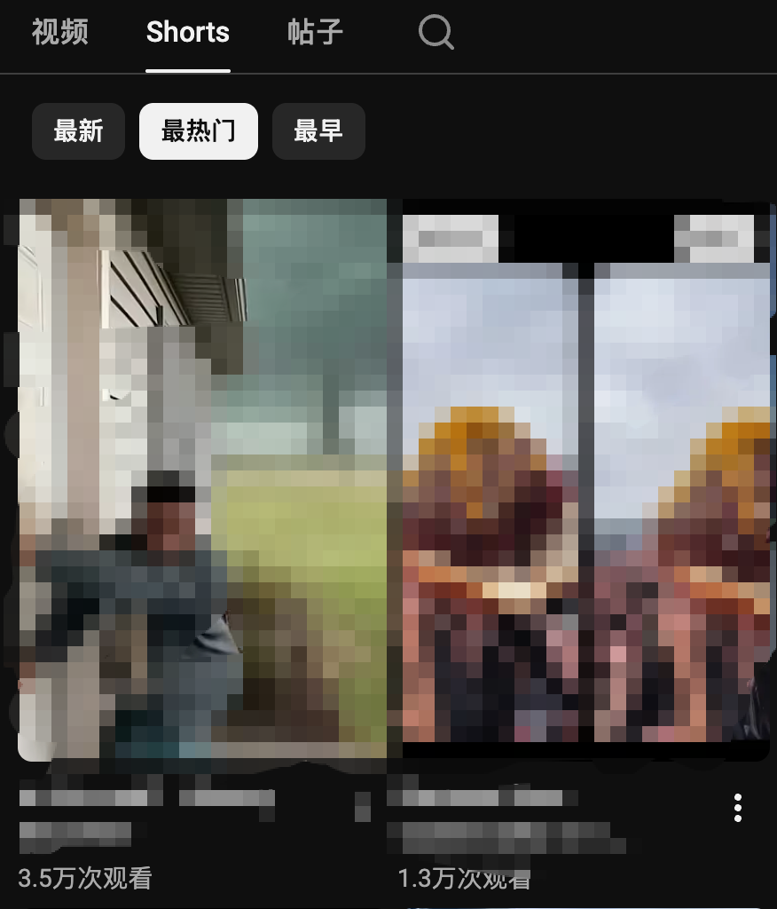
长尾流量：有一天我发现我的网站每天都有可观的流量来自于 YouTube，查根溯源才发现原有有个 AI 博主推荐了我的网站，原因是我的网站支持免费额度，以及接入 affonso第三方代理平台，每次充值代理可以拿到 50% 的 佣金。当然，核心要保证网站的功能体验，不然肯定会被他粉丝骂。
如果你留心就会发现，上述我所说的一系列方法，其实都不怎么需要花钱（除了 Reddit 营销，这个可选），可以理解为唯一的成本就是你的时间。但对于出过单的老手，也有更为高效的付费方式。
付费手段
还记得之前我们说的刷榜单吗？其中就涉及到Toolify、Taaft，因为平台流量足够大，又都支持付费推广（Toolify：99 美金，Taaft 我记得也不超过 100 美金），我们直接付费投到这些导航站，可以短时间验证需求、出单，比较高效。
这类导航站还有：
https://www.saashub.com/services/submit
https://app.aibase.com/zh/submission
https://aitoolsdirectory.com/submit-tool
什么，还不够？让 AI 举一反三嘛
但我鼓励新人不要完全依赖这种方式，前面的所谓免费方法，"极力贴近用户"的过程能让我们对自己的产品、用户和市场慢慢建立起一种直觉——哪类用户转化好、哪个渠道的用户质量高、产品哪个功能是真正的钩子。
最后，综合来说，无论是上面的所谓免费还是付费方式方法，都只是局部，其实新人搞流量方法远不止上面的，甚至你可以组合它们，这是个“黑猫白猫抓到老鼠都是好猫”的事情。
我记得林悦己在一次直播中，被问及如何搞流量，她大概的意思就是什么来流量搞什么，不局限在一种方式一个平台，甚至她还考虑到了拍短视频的着装，这才是流量高手，无孔不入。
那么，到这，还记得开始的问题吗，从哪先搞到首批 300 个目标用户。我相信，如果你死抓这个目标不放，不局限思维，有决心，区区 300 个，对于聪明优秀的你，根本不在话下。
如何放大业务
如果说第一个里程碑是出单，那么第二个里程碑就是如何持续地出单，或者说放大业务。
首先，这块我也是摸石头过河，而且没有绝对的方法路线，比如像小排老师，因为产品口碑佳，属于产品自驱动型，但大部分人还是需要结合很多市场方法手段来放大，总之，我们需要不断摸索找到适合自己的路线和节奏。
流量四板斧
需要又得感谢下哥飞老师，他经常组织出单群友分享，其中的一个群友让我印象很深，简短几句话却总结得很全面，简称流量四板斧，SEO、各大平台广告投流、红人传播、自己发帖灌水，他还提醒到自己，核心还是围绕热点去做，跟炒股一样不干杂毛，只干龙头股，他出手基本都有。
下面我主要说下我的 SEO、Google ads心得体会，至于红人传播和自己发帖，在上述免费方式方法中已有涉及，不再赘述。
SEO
这里也得感谢哥飞的公众号免费文章，让我掌握了很多SEO 知识，在本是 SEO新手的我在SEO上不仅 一开始没有跑偏（尤其是没有掉新人几大新坑），流量还长势喜人。
关于 SEO 的实操除了上面说的哥飞公众号，深海区课程也涉及到非常多篇幅讲解，我这里只说下我的一些理解和小心得吧。
SEO要做的事情虽然很多，事无巨细，但核心是围绕关键词、外链、产品体验，这个过程是不断向 Google 证明自己的网站，取得 Google 信任，提升排名。
关键词
注意一个关键词一个页面的原则，用长尾关键词搜刮流量赢得谷歌信任，提高网站权重，逐渐覆盖主关键词，即农村包围城市。
外链、内链
内链建设是为了帮Google理解你网站的结构和权重分布，传递权重，增加用户时长，从而拉升整体权重，如果要嘱咐三句，那就是坚持发外链！坚持发外链！坚持发外链！
这里有个他人分享的外链列表：https://potent-measure-31f.notion.site/14368f418f50804ba419d3ce7a333fa8?v=14368f418f508191a695000c6fcd329a
产品体验
这里除了前面我们说过的，还有一点就是网站（包括移动端）的性能指标，谷歌非常重视移动端体验，可以说能直接影响排名。先用
https://pagespeed.web.dev/工具进行检测，再用 AI 可以不断优化，最低各项指标要求90 分以上。
新手几大坑
一次性上很多网页（尤其是 AI 生成的低质量内容）
一上来就上多语言
一个页面涉及到多个关键词
忽视内链建设短时间上很多低质量甚至垃圾外链。
关于新词
新词没赶上第一批还有很大希望的，我就亲眼见证了很多比我做得早的新词网站，第一个月拿到了足够的流量，但在接下来的几个月，持续下跌。所以，新词这块感觉倒也不用太焦虑。
做好产品体验，老老实实耐心搞 SEO 才是王道。
Google Ads
对于上路的网站，那是必然要尝试下Google ads 的，我记得某个大佬说过类似的一句话，SEO 在 Google ads面前就是弟弟，用得好的 Google ads 像印钞机。而我现在的每日成本中，Google Ads竟然也占大头，的确比较香。我相信随着 Google Ads AI方面 越来越厉害，Google ads 对于 web 来说越来越重要。
Google ads 的常规配置教程网上有不少（可以公众号搜索相关文章，或 X 平台搜搜），下面我列举一些我遇到的坑和小心得，同样这块我也是边做边学习，可以多多交流，就当抛砖引玉。
选择国家：每个 Google ads 号开通时，需要选定国家，注意，一旦选定后续无法修改。然后会遇到一个坑，就是如果选择的是非大陆地区，后面会有个客户认证等着你，迟早的事，认证不过这样辛辛苦苦好不容易跑起来的号就废了。不过，如果真走到这一步，不要直接放弃，你可以 找 Google ads 顾问，然后可以有办法开通国内身份提交认证通过，我就是这样救回了一个老账号。当然，我不敢保证每次都能成功。
Google ads 赠金：每个 Google 账号开通广告账号时，都可以有机会选择这笔赠金，不同档位要求花出去的广告费不一样，我当初怕够不到最高档领取的是中等档位赠金，其实我感觉如果中等赠金都能领取到了，一般高等赠金问题也不大。
另外，不同国家的新客广告赠金活动金额也不一样，我因为一开始选择的是美国，后面获得的赠金也是美元，依然很香。
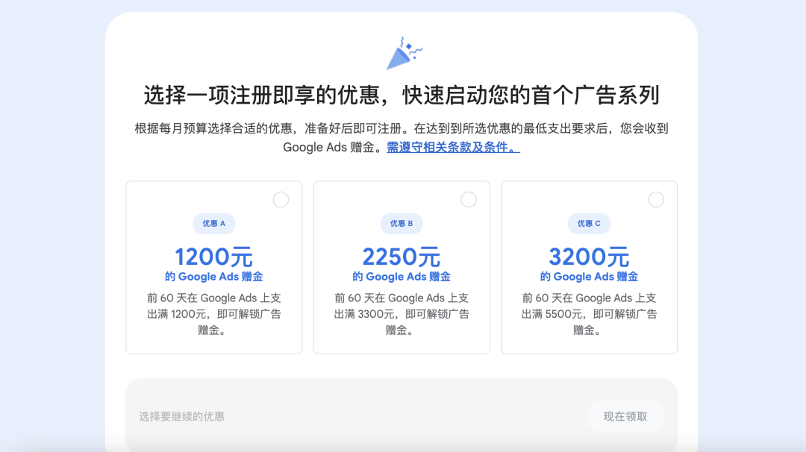
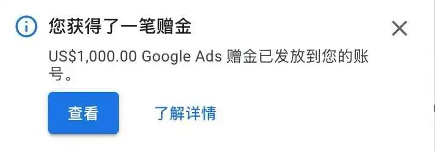
统计代码：尽早装，我广告跑了很久都没老老实实安装统计代码，但实际没有统计代码，谷歌就拿不到数据回传，就不利于 Google ads找到目标用户，从而影响收益。我用的是 tagmanager工具，全程AI 帮我埋点，指导我配置，如果装好不放心，可以找 Google 技术帮忙确认，毕竟每天花的可都是真金白银。
14 天ROAS：广告收益要拉长时间看 14 天的ROAS，很多新人只顾着看单日或者一两天的ROAS，但实际上我们起码要拉长看过去 14 天的，道理很简单，广告带来的用户很可能不是当天转化的，可能过了好几天。
另外，投广告至少前面半个月不要着急看收益，一般要 2 周时间给到 Google 广告调优，这个时间也要综合考虑进去。
联系专业顾问：如果你打算投 Google ads，你可以一开始就找对应国家的专业顾问，他们会免费给你一些基本指导和建议，而且大平台的服务就是不一样。比如我也开过国内 Google ads账号，除了给出专业建议和基础扫盲外，最后对方还客气地邀请我去上海 Google ads 中心吃吃他们食堂的恰饭哈哈。对了，如果找不到，可以联系鱼丸要我微信，我会给Google ads 顾问微信，是位美女。
Google ads可以加快 SEO：一般都会将 Google ads 用来做转化收益，实际还有很多其他用处，比如如果你对网站的功能体验还算自信，可以通过 Google ads 的方式向 Google 证明，一旦有越来越多的用户留存，会拉高网站权重。
再比如，网站起来后，肯定不止一个功能内页，那么就可以通过 Google ads 帮助拉高各个功能内页权重，从而抬高整体权重。更多的，可以问问 Ai，总之，我们不局限于单一思维。
付费转化
前面所说的都是围绕向外搞流量的，那么流量来了，我们最终要的能转化，所以，为了放大业务，我认为向内可以还要做好漏斗转化。
如果从整个用户路径来看，付费转化并非独立环节，流量进来只是开始，用户从落地页到注册、留存，到真正掏钱，每一个环节都会造成一定比例的用户流失。
所以我自己的理解是，尽可能低门槛地、尽快让用户体验到核心功能价值，然后在他们体验到"诶哟不错"的那一刻，顺势推出付费引导，付费环节越少越好，多一个环节多一点流失。
下面说说我理解的几个关键环节：
定价策略
定价是个很有学问的东西，定高了影响单量，定低了影响客单价，同时，它不是一成不变的，在产品甚至是市场的不同阶段，包括竞争对手、成本等综合考虑下，需要阶段性地配合调整。
拉高客单价基本常识
默认选择最高档年付费，即价格锚点策略，这点已经成为圈内常识，哪怕有点违背直觉，但的确行之有效。
我自己的感受是，如果你的用户是发达地区，尤为有效。好处我认为有 2 点，一点起码极大拉高客单价，另外一点是用户第一眼看到的是你的年订阅高价位后，会不自觉拉高用户心理价位锚点，更能接受月度订阅的低价位，从而提高付费率。对了，还有一点，用户基数上去了，从概率学的角度，遇到价格不敏感的土豪用户只是时间问题，而只要遇到一次，能瞬间释放几周甚至一个月的销售压力，心态会好的不得了。
想尽一切办法提高年订阅
当我想尽办法提高年度续费率过后，网站的营业额又上了一个新的台阶。
可能很多人会说，年度会员付费基本都是一次性付费。但实际情况下，新手往往可能会高估月度会员的次月续费率，不妨亲自留意下数据。
除了上面说的默认选择最高的年付费之外，在价格上面我们必须要有一个折扣，具体我可以展开说一下：
只要算好 API 成本，不妨大胆点将年订阅的价格至少打个5折以上，5 折是个量变到质变的临界点，同时在前端显示为比如 3.9$/月（实际按年收费），实际测下来，这会拉高年订阅至少 30% 以上。
另外，不仅仅是在价格上打折扣，实际的年度会员权益还要比月度会员高很多。你放心，我一开始怕用户会用得很勤快，实际上，真正在周期内用完API 的少之又少，可以说，只要不是被恶意刷，基本不会亏。
增加权益点：
我记得有位大佬说过，all in one 能提高付费，我自己的感受是，我上了新的功能权益点后，哪怕不是用户的核心需求，年付费也有增多，当然，不能完全是牛马不相及的功能，起码符合用户工作流场景的一些权益。所以，只要你有个用户基本盘，核心需求场景的上下游工作流你也可以冲一冲。
取消挽留弹窗
这个其实我还没来得及做，但我看过有人分享过也行之有效，其实是来自于 App 的一些经典操作。即当用户点击取消订阅时,弹出"挽留优惠"。比如"取消前最后机会:年付再享7折"。对了，你可能不知道， X 取消订阅时会有 50% 的折扣。哈哈，所以，没事试图取消一些你手头上的订阅吧，说不定有惊喜哦。
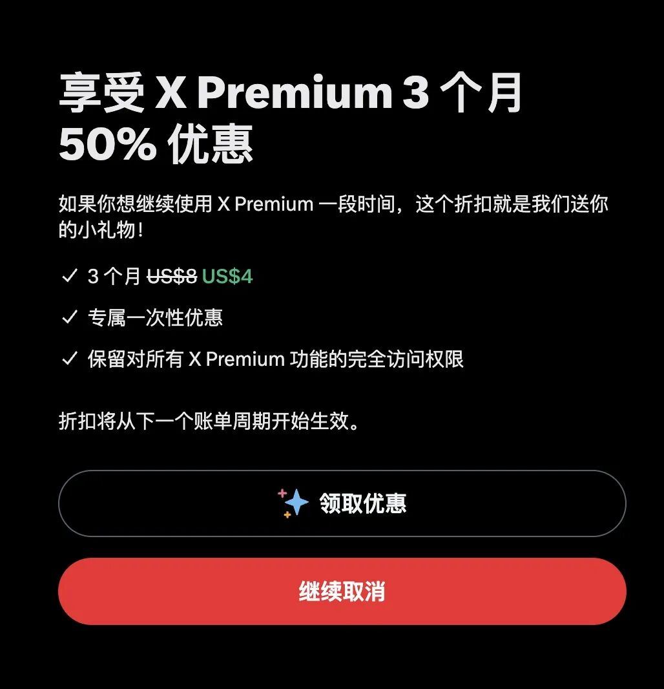
限时优惠制造紧迫感：优惠永久有效等于没有优惠。有截止时间的折扣，转化率比常驻折扣高很多，还是利用了 FOMO 心理。
其他拉高付费率心得分享
- 免费额度/试用设计：这个其实比"免费试用X天"更有效。不是给时间，而是给用量——比如每天免费3次、新用户注册送50积分，好处是用户真实体验了核心功能，而不是在免费期内随便玩玩就走了。额度设计的关键在于：免费够让用户爽到，但不够让用户不付钱就满足，这个度需要自己测。
- 邮件召回：对于一些稍微重度一点的用户，或者是有付费意愿倾向的用户，我们需要利用好邮件进行召回，刺激付费。比如已付费但没有续费的用户、在付费最终步骤之前取消的用户、 留存情况较好，但迟迟未付费的用户等等。这些情况都可以结合邮件进行提醒。当然，如果能配合一些优惠激励，效果会更好。最后嘱咐一下，请注意避免邮件方面的风险，做好风控。比如我就曾因为短时间频繁发邮件被 Resend 封掉过账号而转用Postmark。
- 用户证言：用户付钱前会下意识找"别人也在用"的信号，这和电商里经常说什么衣服卖的最好是一样的，是从众心理学在发挥作用。常用做法，首页放真实用户评价，带头像和名字。实时显示"今天已有XX人使用"或"过去24小时生成了XX个作品"，媒体/知名网站的推荐标志（"As seen on..."）
- Upsell和套餐设计：我记得有人分享过，持续赚那些高价值用户的钱，比赚新用户的钱更容易。一般做法，付费完成页面放"升级到年付再省XX"，月付用户用到一定量自动触发"升级提示"
- 用户足够精准，场景越垂直，付费率越高：这让我想起了小排老师在公众号分享的RoofClaw 案例，$50k/月，目标用户是屋顶修复承包商，这个销售额在OpenClaw 创业方面，比大部分面向普通用户的都要高得多。
- 发达地区用户：如果你的用户大部分来自于欧美地区，那么你的付费率肯定高于平均水平
- 支付方式：能用 stripe 的支付方式尽可能用 stripe，因为比较专业，更容易赢得用户信任。
- 支付门槛：如果付费迟迟很低，可以尝试上一个低门槛的一次性付费，让用户先短时间体验到核心价值。
- 尽可能打消用户顾虑；像免费试用、不满意退款、随时取消订阅，无隐形消费等都不失为一些不错的设计。
- 付费墙：做到页面内部弹出而不是跳转，这个是其他人分享的，理论上肯定能拉高，我还没来得及做。
- UI，用户体验：一个看上去专业可靠、UI 看上去很舒服的网站，会更能赢得用户的信任。
- 沉没成本：如果不能一次性到位引导付费，那先尽可能留住用户，让用户有参与感付出时间成本，比如先提高注册登录率。
感谢 AI，感恩时代
其实，这篇所说的也都是老生常谈的一些基础东西，很抱歉，我没有什么高超绝学，我也反思过我能拿到这么强反馈的一些根本原因到底是什么？
我认为有两样东西是充分且必要条件：
其一是运气：是的，我从不否定运气的重要性，我基本无一例外地见过大佬都直言不讳离不开好运，看上去这玩意儿是可遇不可求，但其实，我们可以尽可能提高接到好运概率。之前听说过一个比喻，好运就像天上掉下来的馅饼，我们不知道何时会掉，但我们能做的就是在掉下来之前，把锅碗瓢盆做得更大些，然后随时准备好，用现在的话讲，一直留在牌桌上。
其二是 AI：很显然，AI 的进步速度，超过了所有人的想象，用日新月异这个词毫不夸张。
作为一个普通人（我似乎未提及我不会写代码，因为这点已经越来越不重要了），在选择并不多的情况下，因为有了 AI，很多想法可以得以设计、产品化或作品化。我时不时有一些激动与好奇的点子，有的甚至是跨越产品形态，如游戏、视频、音乐，几年前我会觉得天方夜谭，但现在我只想跃跃欲试。我想到罗永浩采访 Lovart 创始人陈冕那一期，陈冕说 AI 是他的救赎，这一刻，我完全能理解。
说到播客，最近正在听孟岩和李继刚的《人何以自处》播客，里面李继刚提到一个观点说，我们正在同时存在于 三 个世界，第一个世界是我们现在所处的现实世界由原子构成，第二个世界是比特世界，即互联网世界，第三个世界是AI世界由向量构成。第一个世界在工业时代发生大变化，让我们的物质变得丰饶，第二个世界让世界变得扁平，而第三个AI 世界，会让时间变得不存在！
而我们正处于第三个世界开启的元年，这无疑会带来了史无前例的机会。感恩这个时代。
感谢您能看到最后，这是篇 13810 字的长文，你有如此般耐心，相信你定能成功。
最后，愿大家都早日实现财富自由，我们下次见。